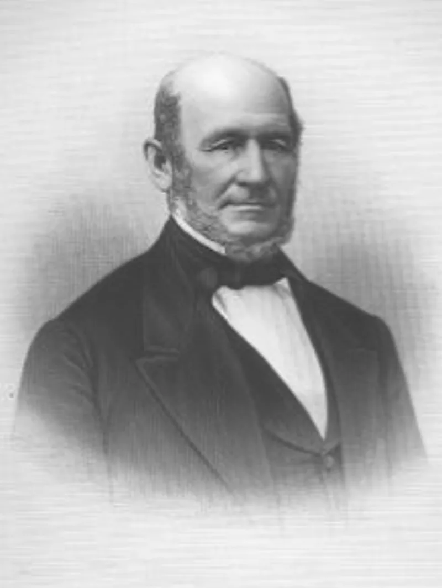

Eleven of his wives had living husbands
AdmittedTheir own church publications admit these facts. You can make this point from LDS sources alone.
What the word means here
Being sealed to a woman who already had a living husband.
The count
Roughly 11 of Joseph Smith's plural wives were civilly married to living husbands at the time. Todd Compton puts that at about a third of them.
The church's own essay concedes he was sealed to "a number of women who were already married."
One case
Zina Diantha Huntington. She was sealed to Smith in October 1841, about seven months after she married Henry Jacobs.
Smith had told her that an angel with a drawn sword threatened his position and his life if plural marriage was not established. She went on living with Jacobs.
Their answer, at full strength
Brian Hales argues most of these were "eternity only" — a link for the next life that left the earthly marriage alone. That is why husbands like Henry Jacobs stayed in the home, and some stayed faithful members.
There is hard evidence too. In 2016 Ugo Perego's DNA testing ruled Smith out as the father of Josephine Lyon.
Her mother was the polyandrous wife with the strongest documentary claim of a marital relationship. No verified child of Smith by any plural wife has ever been identified.
And the essay itself allows that these sealings may have been about eternal linking.
How strong is this argument?
They admit the sealings. Whether there were sexual relations is genuinely contested, and the DNA result is a real win for them.
Do not claim proven sexual polyandry. You cannot support it.
What stands on primary sources is the sealing itself — to other men's wives, under angelic threat, and in secret.
What to say
"Were any of the women he was sealed to already married?"


How they answer this — at its strongest
Most were for eternity only, and DNA testing in 2016 cleared Smith of one claim.
Brian Hales argues that most of these sealings were 'eternity only'. They linked people for the next life without disturbing the earthly marriage. That is why husbands such as Henry Jacobs stayed in the home, and why some stayed faithful members.
There is supporting evidence. In 2016, DNA testing by Ugo Perego ruled Smith out as the father of Josephine Lyon. Her mother was the polyandrous wife with the strongest documentary claim of marital relations. No verified child of Smith by any plural wife has ever been identified.
And the essay itself states that these sealings may have been about eternal linking rather than earthly marriage.
The verdict
They admit the sealings: do not claim proven sexual polyandry, you cannot support it.
The fact of sealings to married women is conceded by the church. Roughly 11 of them, about a third of his plural wives by Todd Compton's count.
Whether they included sexual relations is genuinely argued, and the DNA result is a real win for their side. Critics who assert proven sexual polyandry overreach.
But the claim as stated stands on primary sources. Sealings to other men's wives, under an angelic threat, and hidden from the community.
Sources
- Gospel Topics Essay: Plural Marriage in Kirtland and Nauvoo
- Todd Compton, In Sacred Loneliness (IRR summary)
- FAIR: Polyandry and Joseph Smith